The same techniques will work to analyze any delay network, although for more complicated networks it becomes harder to characterize the results, or to design the network to have specific, desired properties. Another point of view can sometimes be usefully brought to the situation, particularly when flat frequency responses are needed, either in their own right or else to ensure that a complex, recirculating network remains stable at feedback gains close to one.
The central fact we will use is that if any delay network, with either one or many inputs and outputs, is constructed so that its output power (averaged over time) always equals its input power, that network has to have a flat frequency response. This is almost a tautology; if you put in a sinusoid at any frequency on one of the inputs, you will get sinusoids of the same frequency at the outputs, and the sum of the power on all the outputs will equal the power of the input, so the gain, suitably defined, is exactly one.
| 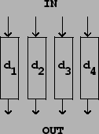 |
In order to work with power-conserving delay networks we will need an
explicit definition of ``total average power".
If there is only one signal (call it  ), the average power is
given by:
), the average power is
given by:
It turns out that a wide range of interesting delay networks has the property that the total power output equals the total power input; they are called unitary. To start with, we can put any number of delays in parallel, as shown in Figure 7.11. Whatever the total power of the inputs, the total power of the outputs has to equal it.
A second family of power-preserving transformations is composed of rotations
and reflections of the signals 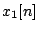, ... , 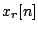, considering them,
at each fixed time point  , as the
, as the  coordinates of a point in
coordinates of a point in
 -dimensional space. The rotation or reflection must be one that leaves the
origin
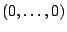 fixed.
-dimensional space. The rotation or reflection must be one that leaves the
origin
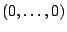 fixed.
For each sample number  , the total
contribution to the average signal power is proportional to
, the total
contribution to the average signal power is proportional to
 |
Figure 7.12 shows a rotation matrix operating on two signals. In
part (a) the transformation is shown explicitly. If the input signals are
and 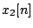, the outputs are:
For an alternative description of rotation in two dimensions,
consider complex numbers
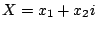 and
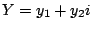. The above transformation amounts to setting
If we perform a rotation on a pair of signals and then invert one (but not the
other) of them, the result is a
reflection.
This also preserves total signal power, since we can invert any or all of a
collection of signals without changing the total power. In two dimensions, a
reflection appears as a transformation of the form
A special and useful rotation matrix is obtained by setting 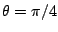, so that 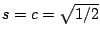. This allows us to simplify the computation as shown in Figure 7.13 (part a) because each signal need only be multiplied by the one quantity 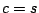.
| 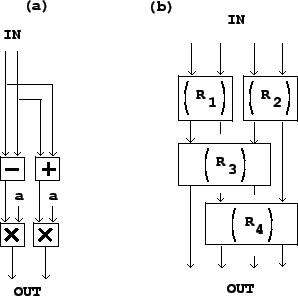 |
More complicated rotations or reflections of more than two input signals may be
made by repeatedly rotating and/or reflecting them in pairs. For
example, in Figure 7.13 (part b), four signals are combined in
pairs, in two successive stages, so that in the end every signal input feeds
into all the outputs. We could do the same with eight signals (using three
stages) and so on. Furthermore, if we use the special angle  , all the
input signals will contribute equally to each of the outputs.
, all the
input signals will contribute equally to each of the outputs.
Any combination of delays and rotation matrices, applied in succession to a collection of audio signals, will result in a flat frequency response, since each individual operation does. This already allows us to generate an infinitude of flat-response delay networks, but so far, none of them are recirculating. A third operation, shown in Figure 7.14, allows us to make recirculating networks that still enjoy flat frequency responses.
| 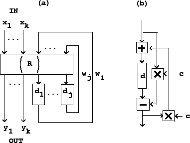 |
Part (a) of the figure shows the general layout. The transformation  is
assumed to be any combination of delays and mixing matrices that preserves
total power. The signals
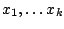 go into a
unitary delay network, and the output signals
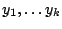 emerge.
Some other signals
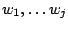 (where
is
assumed to be any combination of delays and mixing matrices that preserves
total power. The signals
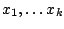 go into a
unitary delay network, and the output signals
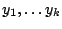 emerge.
Some other signals
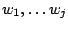 (where  is not necessarily equal to
is not necessarily equal to
 ) appear at the output of the transformation
) appear at the output of the transformation  and are fed back to its
input.
and are fed back to its
input.
If  is indeed power preserving, the total input power (the power of the
signals
plus that of the signals
)
must equal the output power (the power of the signals
plus
), and subtracting all the 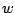 from the
equality, we find that the total input and output power are equal.
is indeed power preserving, the total input power (the power of the
signals
plus that of the signals
)
must equal the output power (the power of the signals
plus
), and subtracting all the 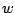 from the
equality, we find that the total input and output power are equal.
If we let 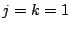 so that there is one  ,
,  , and ,
and
let the transformation
, and ,
and
let the transformation  be a rotation by
be a rotation by  followed by a delay of
followed by a delay of
 samples on the
samples on the  output, the result is the well-known
all-pass filter.
With some juggling, and letting
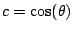, we can show it is
equivalent to the network
shown in part (b) of the figure. All-pass filters have many applications, some
of which we will visit later in this book.
output, the result is the well-known
all-pass filter.
With some juggling, and letting
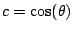, we can show it is
equivalent to the network
shown in part (b) of the figure. All-pass filters have many applications, some
of which we will visit later in this book.